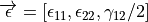

Submodules¶
AutoFiber generator¶
-
autofiber.generator.calcunitvector(vector)¶ Returns the unit vector of the given vector.
-
class
autofiber.generator.AutoFiber(cadfile=None, initpoint=None, initdirection=None, initnormal=None, materialproperties=(228.0, 0.2, None), fiberint=0.1, angle_error=0.01, accel=False)¶ Bases:
object-
assign_vertices()¶ Assign all vertices a uv coordinate based on the closest geodesic to the vertex Cleanup methods are employed here such as self.fill_missing_geodesics and self.fill_low_density_geodesics
- Returns
Sets the self.geoparameterization
-
average_fpoint(leftover_idxs, mask)¶ Last ditch effort to assign the missed vertices. Simply average any nearby uv coordinates and make sure the new coordinate won’t flip the triangle.
- Parameters
leftover_idxs – Indices of missed vertices during assignment
mask – Surface vertex index mask
- Returns
Any vertex indices that were missed by this cleanup method
-
calc_geodesic(point, element, unitfiberdirection, uv_start, direction=1, parameterization=False, save_ints=True)¶ Calculates the geodesic path from a point in a given direction
- Parameters
point – The geodesic’s starting point
element – The first element we will traverse
unitfiberdirection – The desired direction the geodesic will propogate
uv_start – Starting point in uv space
direction – Positive (1) or negative (-1) direction of unitfiberdirection?
parameterization – Do we want to save this geodesic into self.georecord for use in the parameterization?
save_ints – Do we want to save intersection points for plotting purposes?
- Returns
Adds the resulting geodesic path to the self.geoints and/or the self.georecord
-
calc_geodesics(startidx)¶ Computes the a geodesic path in the positive and negative direction for each point define in start_points beginning at the index startidx :param: startidx: Which index in self.startpoints to begin calculating geodesics at :return: Adds the relevant details for each geodesic to self.georecord
-
calcorientations_abaqus(modellocs, vertices, vertexids, inplanemat, texcoords2inplane, boxes, boxpolys, boxcoords)¶ Function optimized for Abaqus to determine the orientations of given locations.
- Parameters
modellocs – Points of interest on the surface or close to the surface
vertices – Vertices of the model
vertexids – Indices of the vertices of the model for each element
inplanemat – Orthogonal matrix defined by spatialnde
texcoords2inplane – Transformation matrix between 3D space and uv space
boxes – spatialnde polygon box definition
boxpolys – spatialnde polygon definition relative to boxes
boxcoords – spatialnde box vertex coordinates
- Returns
Orientations at modellocs
-
calctransform(parameterization)¶ Calculate the transformation matrix between the 3D model and the uv parameterization using spatialNDE
- Parameters
parameterization – uv parameterization
- Returns
Transformation matrix
-
check_negative_area(record)¶ Check to see if we have a triangle with a flipped normal
- Parameters
record – Parameterization we want to check
- Returns
True if there is a flipped triangle, False otherwise
-
create_parameterization()¶ Create the uv parameterization based on the computed geodesic paths If vertices can’t be assigned or are missed cleanup methods are employed to attempt to solve coordinates for all vertices. This is difficult to make robust as geometric complexities can vary quite largely.
-
determine_surface(initpoint, initdirection)¶ Determine which surface of a 3D model we should operate on. This should single out a solo surface without sharp (90 degree) edges
- Parameters
initpoint – Starting point
initdirection – Starting direction
- Returns
Sets self.surface_vertexids
-
fiberoptimize(seed, precision=None, maxsteps=None, lr=None, decay=None, eps=None, mu=None)¶ Minimum strain energy optimization of a seed parameterization. Uses an RMSprop optimization algorithm.
- Parameters
seed – Initial uv parameterization
precision – Termination threshold for the strain energy optimization
maxsteps – Maximum number of optimization iterations
lr – Optimization rate (similar to learning rate in machine learning optimizers)
decay – Decay rate
eps – Error precision value
mu – Momentum value
- Returns
-
fill_low_density_geodesics(minassigned)¶ Spin off more geodesics in elements that contain a low number of geodesics per area (This method is a little unreliable because the geodesics/area threshold isn’t well defined for all models)
- Parameters
minassigned – Minimum number of neighbors that contain geodesics
- Returns
Nothing
-
fill_missing_geodesics(elements, minassigned)¶ Spin off more geodesics in elements that contain no geodesics (i.e. fill holes in the initially spawned geodesics)
- Parameters
elements – Elements without an geodesics
minassigned – Minimum number of neighbors that contain geodesics
- Returns
Nothing
-
find_close_geodesic(elements, point)¶ Find the closest geodesic in self.georecord and elements
- Parameters
elements – A given set of search elements for a close geodesic
point – The point we want to find a close geodesic to
- Returns
tuple(georecord, element closest geodesic is in,
[vector perpendicular to u direction norm(vector) = v distance, u distance])
-
find_startpoints(initpoint, initdirection, normal, cfpoint, directions=(1, - 1))¶ Determines starting location, direction, and element for each geodesic Spawns geodesics perpendicular to initdirection Geodesic start points are dropped in self.fiberint intervals
- Parameters
initpoint – Starting location (should be close to the center of the model)
initdirection – Starting direction vector
normal – Surface normal vector
cfpoint – initpoint location in parameterization space
directions – A tuple of positive and negative directions to compute start point geodesics
- Returns
Appends new geodesic start information to the relevant lists
-
interpolate(leftover_idxs, mask)¶ Basic interpolation of uv coordinates based on nearby element fiber directions leftover from geodesic paths
- Parameters
leftover_idxs – Indices of missed vertices during assignment
mask – Surface vertex index mask
- Returns
Any vertex indices that were missed by this cleanup method
-
interpolate_geodesic(point, element, minassigned)¶ Determine a geodesics starting direction and uv parameterization location that is between two other geodesics
- Parameters
point – A point between two geodesics
element – The element point is within or a vertex of
minassigned – Minimum number of neighbor elements that have geodesics within them for the used starting element
- Returns
The direction and uv parameterization location of the geodesic at point
-
interpolate_point(vertex)¶ Determine the uv coordinates of a point using the same method as interpolate_geodesic (Currently not being used as direct assignment is faster and more accurate than spinning off more geodesics)
- Parameters
vertex – Starting vertex
- Returns
uv coordinates of vertex
-
layup(angle, orientation_locations=None, precision=0.0001, maxsteps=10000, lr=0.001, decay=0.7, eps=1e-08, mu=0.8, plotting=False, save=False, model_save=None)¶ Once the parameterization has been computed we can calculate any fiber orientation without needing to compute a new geodesic mapping. Simply rotate the geoparameterization by angle and then minimize the strain energy.
- Parameters
angle – Desired fiber orientation
orientation_locations – Optional locations to calculate the fiber orientations at. Default is element centroids.
precision – Termination threshold for the strain energy optimization
maxsteps – Maximum number of optimizaiton iterations
lr – Optimization rate (similar to learning rate in machine learning optimizers)
decay – Decay rate
eps – Error precision value
mu – Momentum value
plotting – Do we want to plot the results using matplotlib?
save – Do we want to save the fiber orintations at orientation_locations to a .npy file
model_save – Export an x3d model with the optimized uv coordinates defined
- Returns
texcoords2inplane - Transformation matrix between 3D space and 2D space, once created any orientation
at any point on the surface can be evaluated.
-
loadobj()¶ Load a given CAD model using SpatialNDE Currently supported models are X3D, STL, and De-La-Mo/DMObjects
-
loadvars()¶ Load spatialnde data into the corresponding model variables
-
point_in_polygon_3d(vertices, point, inplanemat)¶ assumes vertices are coplanar, with given orthonormal 2D basis inplanemat.
-
AutoFiber geodesic¶
-
exception
autofiber.geodesic.EdgeError¶ Bases:
Exception
-
autofiber.geodesic.angle_between_vectors(v1, v2)¶ Returns the angle in radians between vectors ‘v1’ and ‘v2’ https://stackoverflow.com/questions/2827393/angles-between-two-n-dimensional-vectors-in-python
-
autofiber.geodesic.calcbarycentric(point, element_vertices)¶ Convert 3d point to barycenteric coordinates https://en.wikipedia.org/wiki/Barycentric_coordinate_system https://math.stackexchange.com/questions/2292895/walking-on-the-surface-of-a-triangular-mesh
- Parameters
point – 3d point
element_vertices – Vertices of current element
- Returns
point in barycenteric coordinates
-
autofiber.geodesic.calcbarycentricdirection(vector, element_vertices)¶ Convert a direction vector from 3d to barycenteric coordinates https://en.wikipedia.org/wiki/Barycentric_coordinate_system https://math.stackexchange.com/questions/2292895/walking-on-the-surface-of-a-triangular-mesh
- Parameters
vector – Direction vector in 3d
element_vertices – Vertices of current element
- Returns
Vector in barycenteric coordinates (du, dv)
-
autofiber.geodesic.calcclosestpoint(unitvector, oldpoint, meshpoints, normal)¶ Find closest mesh vertex defined by the distances calculated in calcdistance
- Parameters
unitvector – Reference direction vector
oldpoint – Start point for unitvector
meshpoints – All test points
- Returns
Closest point relative to unitvector
-
autofiber.geodesic.calcdistance(unitvector, oldvertex, meshpoints)¶ Calculate perpendicular distance between a ray and a point
- Parameters
unitvector – Reference vector to calculate distance from
oldvertex – Start point for unitvector
meshpoints – Test points
- Returns
Perpendicular and parallel distance to each mesh point
-
autofiber.geodesic.calcnormal(points)¶ Returns the normal for the given 2d points
-
autofiber.geodesic.calcunitvector(vector)¶ Returns the unit vector of the vector.
-
autofiber.geodesic.check_inplane_pnt(point, element_vertices)¶ Determines if a point is within the plane of the current element face
- Parameters
point – A point within or on the edge of the current element
element_vertices – Vertices of current element
- Returns
True if the point is within in the plane, or False if otherwise
-
autofiber.geodesic.check_inplane_vector(vector, normal)¶ Determines if a vector is in plane with the current element
- Parameters
vector – Test vector
normal – Normal of element
- Returns
-
autofiber.geodesic.check_intersection(p1, q1, p2, q2)¶ Check for an intersection between (p1, p2) and (q1, q2) https://www.geeksforgeeks.org/check-if-two-given-line-segments-intersect/
-
autofiber.geodesic.check_proj_inplane_pnt(point, element_vertices)¶ -
- Parameters
point – Test point to check
element_vertices – Vertices of current element
- Returns
True or False, depending on if the projected point is inside or outside
-
autofiber.geodesic.find_edge(point, direction, bary, error)¶ Determines which edge number is intersected first (0, 1, 2) -> (d12, d23, d31) https://math.stackexchange.com/questions/2292895/walking-on-the-surface-of-a-triangular-mesh
- Parameters
point – Start point
direction – Current fiber direction
error – Numerical tolerance
- Returns
Edge number (0, 1, 2) or -1 if on an edge
-
autofiber.geodesic.find_element_vertex(point, unitvector, curnormal, vertices, vertexids, facetnormals)¶ Determines which element is next given a vertex and an angle
- Parameters
point – Vertex in the mesh
unitvector – Fiber direction vector
curnormal – Current element normal direction vector
vertices – Mesh vertices
vertexids – Id’s of mesh element vertices
facetnormals – Normals of each element in mesh
- Returns
The element in which the fiber direction vector resides
-
autofiber.geodesic.find_element_within(point, unitvector, normal, vertices, vertexids, facetnormals, inplanemat)¶ Determines which element a point is within
- Parameters
point – Vertex in the mesh
unitvector – Fiber direction vector
normal – Current element normal direction vector
- Returns
The element that the point is within
-
autofiber.geodesic.find_intpnt(P1, P2, P3, P4)¶ Line-Line intersection method Returns: A point in 2d that intersects line P1P2 and P3P4 https://en.wikipedia.org/wiki/Line%E2%80%93line_intersection
-
autofiber.geodesic.find_neighbors(element, vertexids_indices, adjacencyidx)¶ Finds neighboring elements
- Parameters
element – Current element
vertexids_indices – Indices of the mesh indices
adjacencyidx – Built from spatialnde, index of element adjacency
- Returns
An array of element numbers that neighbor the current element
-
autofiber.geodesic.invcalcbarycentric(pointuv, element_vertices)¶ Convert barycenteric coordinates into 3d https://en.wikipedia.org/wiki/Barycentric_coordinate_system https://math.stackexchange.com/questions/2292895/walking-on-the-surface-of-a-triangular-mesh
- Parameters
pointuv – Point in barycenteric coordinates (u, v)
element_vertices – Vertices of current element
- Returns
pointuv in 3d coordinates (x, y, z)
-
autofiber.geodesic.invcalcbarycentricdirection(vectoruv, element_vertices)¶ Convert vector in barycenteric coordinates into a 3d vector https://en.wikipedia.org/wiki/Barycentric_coordinate_system https://math.stackexchange.com/questions/2292895/walking-on-the-surface-of-a-triangular-mesh
- Parameters
vectoruv – Vector in barycenteric coordinate (du, dv)
element_vertices – Vertices of current element
- Returns
Vectoruv in 3d space (dx, dy, dz)
-
autofiber.geodesic.proj_vector(vector, newnormal)¶ Project a vector onto a surface defined by newnormal
- Parameters
vector – Vector to be projected
newnormal – Normal of projected surface
- Returns
Vector projected on surface defined by newnormal
-
autofiber.geodesic.rot_vector(oldnormal, newnormal, vector, terminate_angle=85.0, force=False)¶ Rotate a vector given an axis and an angle of rotation Returns: Vector reoriented from an old element face to a new element https://en.wikipedia.org/wiki/Rodrigues’_rotation_formula
-
autofiber.geodesic.traverse_element(af, element, point, unitfiberdirection, length, uv_start, direction=1, parameterization=True)¶ Traverse a triangular element
- Parameters
af – Autofiber object
element – Current triangular element
point – Current point
unitfiberdirection – Current direction vector
length – Current length of the geodesic
uv_start – Start point of geodesic in uv space
direction –
for positive geodesic direction, (-1) for negative geodesic direction
parameterization – Are we going to record geodesic details for use in parameterization calculation?
- Returns
next intersection point, next unitfiberdirection based on next element, next element
-
autofiber.geodesic.vector_inbetween(v1, v2, v3, error=1e-10)¶ Determines if a vector (v1) is between v2 and v3 https://stackoverflow.com/questions/13640931/how-to-determine-if-a-vector-is-between-two-other-vectors
- Parameters
v1 – Test vector
v2 – Given vector
v3 – Given vector
- Returns
True if vector is between v2 and v3, false if not between
AutoFiber optimization¶
-
autofiber.optimization.build_checkerboard(w, h)¶ https://stackoverflow.com/questions/2169478/how-to-make-a-checkerboard-in-numpy Build a checkerboard array
- Parameters
w – width of checkerboard
h – height of checkerboard
- Returns
checkerboard array of width w and height h
-
autofiber.optimization.calc2d(obj, points)¶ Calculate a 2D representation of a 3D model
- Parameters
obj – spatialnde object
points – 3D model points to be converted to 2D
- Returns
points in 2D space
-
autofiber.optimization.calcunitvector(vector)¶ Returns the unit vector of the vector.
-
autofiber.optimization.computeglobalstrain(normalized_2d, fiberpoints, vertexids, stiffness_tensor)¶ Compute the strain energy between a 2d representation of a surface and a uv (geodesic) parameterization
- 2D mapping of 3D model surface based on element normal and inplanemat
- Parameterization of 3D surface based on geodesic lines
Compute the areas of each triangular element in UV space:
Compute the deformation gradient between each element in UV space and the corresponding element in 2D space:
Utilizing the Lagrangian finite strain tensor:
where the right Cauchy–Green deformation tensor and is the identity matrix.
Since we have to:
Therefore the total strain energy density of the surface with units (J/length):
where
 is the stiffness tensor of the defined material and N is the total number of mesh elements.
is the stiffness tensor of the defined material and N is the total number of mesh elements.- Parameters
normalized_2d – 2D representation of a 3D model
fiberpoints – uv parameterization
vertexids – Vertex indices of each element in the 3D model
stiffness_tensor – Stiffness tensor of the given material
- Returns
The computed total strain energy between normalized_2d and fiberpoints
-
autofiber.optimization.computeglobalstrain_grad(normalized_2d, fiberpoints, vertexids, stiffness_tensor, oc)¶ Compute the gradient of the strain energy function defined above with respect to the movement of each point in the uv parameterization.
- 2D mapping of 3D model surface based on element normal and inplanemat
- Parameterization of 3D surface based on geodesic lines
Compute the areas of each triangular element in UV space:
In order to calculate the derivative of the area of each element with respect to each nodal displacement we will calculate the (i,j)-minor of by the determinate of the matrix created by removing the ith row and jth column in for each element in :
Then using we can compute the cofactor matrix:

Therefore, the adjugate matrix of is:
The derivative of the area of each element with respect to each nodal displacement can be calculated using Jacobi’s formula as follows:
where is the derivative of each nodal displacement with respect to moving all the other nodes for each mesh element.
Compute the deformation gradient between each element in UV space and the corresponding element in 2D space:
Utilizing the Lagrangian finite strain tensor:
where the right Cauchy–Green deformation tensor and is the identity matrix.
Since  we have to:
The derivative of the deformation tensor with respect to each nodal displacement is as follows:
The derivative of strain with respect to each nodal displacement:
Then to account for :
Finally, we can compute the derivative of the strain energy density with respect to each nodal displacement with the following application of the chain rule:
- Parameters
normalized_2d – 2D representation of a 3D model
fiberpoints – uv parameterization
vertexids – Vertex indices of each element in the 3D model
stiffness_tensor – Stiffness tensor of the given material
oc – A vertex index which we want to constrain by fixing it’s location
- Returns
The gradient of strain energy with respect to movement of each point in the uv parameterization
-
autofiber.optimization.minor(arr, i, j)¶ https://stackoverflow.com/questions/3858213/numpy-routine-for-computing-matrix-minors Calculate the minor of a matrix with ith row, jth column removed
- Parameters
arr – Matrix of interest
i – row to remove
j – column to remove
- Returns
minor of arr with ith row removed and jth column removed
AutoFiber analyze_uv¶
-
autofiber.analyze_uv.BuildEdgeDict(surface)¶ Create edge dictionary from a surface. The edge dictionary is indexed by a tuple (vertexindex1,vertexindex2) of indices into surface.vertexes. It contains a list of polygon ids that have an edge that shares these two vertices.
This function assumes that identical vertices in the surface have been merged, so the vertexindex uniquely identifies the vertex.
This function returns the edge dictionary
-
autofiber.analyze_uv.DetermineAdjacency(surface, edges, surfaceparameterization=None, texture=False)¶ - Build an adjacency index for the given surface
with the given edgedict. The adjacency index has the same layout as surface.vertexidx, but additional entries may be -1 as facets may have fewer adjacencies than vertices.
The adjacency index contains the polygon numbers adjacent to the given polygon.
If texture=True is given as a parameter, then the adjacency index built up will only show adjacencies both in the polygon mesh and in the texture. In that case, the polygon indices will include both original polygons and redundant copies, so the polygon indices will range from 0 to vertexidx_indices.shape[0]+texcoordredundant_polystartindexs.shape[0]
-
autofiber.analyze_uv.FindTexPatches(surface, texadjacencyidx, surfaceparameterization=None)¶ Given a surface and a texture adjacency index (which contains the texture polygon numbers adjacent, to the given texture polygon, with polygons findable from surface.vertexidx_indices and surfaceparameterization.texcoordredundant…), separate the polygons of the surface into groups that have adjacent texture. Return a list of lists of polygon numbers.
-
autofiber.analyze_uv.IdentifyTexMaps(part, surfaceparameterizationmapping=None)¶ Trace through and identify all texture maps, given a part (ndepart instance)
If texture_urls are given through an appearance node, those are used. If the appearance node is missing or does not provide a texture_url, then a numbered name is used for that surface, of the form _unnamed_surface_%d
- Returns a tuple of two dictionaries:
surface_texurl is indexed by the id of the surface object and contains the the texture url as a string. surfaces_bytexurl is indexed by texture url strings and contains a list of surface objects that share that texture url